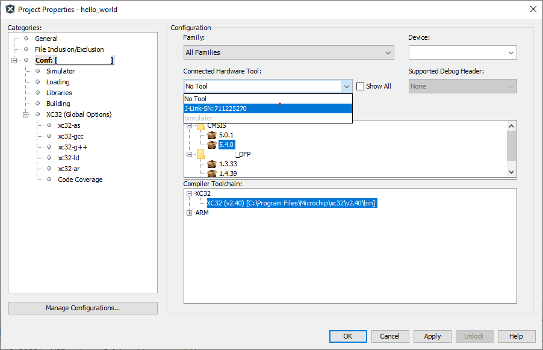
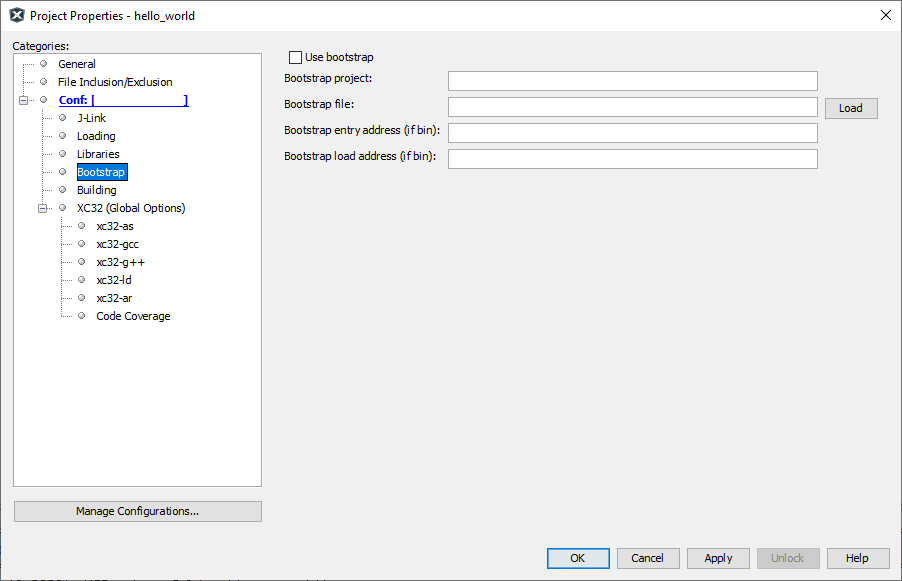
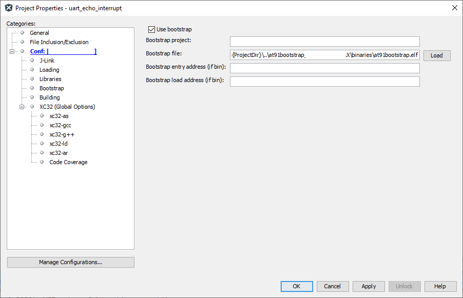

2.1 Bootstrapping MPU applications using at91bootstrap loader
AT91Bootstrap loader
MPU applications in this repository are linked to execute from external DRAM memory that is available on the evaluation kit(s). To do this, all peripherals and clock leading up-to the correct configuration of DRAM memory needs to be setup correctly prior to programming the application intoBootstrap loader project used for this purpose is a variant of the AT91Bootstrap project available for Microchip MPUs. It can be downloaded from here. This project is adapted to be used from within MPLABX IDE on both Windows and Linux.
Bootstrap loader can be used with the application in two ways:- Load a binary by the name harmony.bin from SD Card
- Run or Debug the application from MPLAB X
MPLABX application examples
Each application in this repository is bundled with its own copy of AT91Bootstrap project. Each copy of the bootstrap project can be found under same folder as the application project and is named and is prefixed with "at91bootstrap_". For eg: if the application folder name is sam_a7g5_ek.X, then bootstrap project folder will be named at91bootstrap_sam_a7g5_ek.X and will be present at the same folder level. Additionally, each application is configured with a post-build script which will generate a binary file called harmony.bin.
Build AT91Bootstrap MPLABX project
- Bootstrap project can be
configured using MPLABX using its KCONFIG menu. To do this, open the project in
MPLABX, right click on the project and select "properties". In categories,
select "Kconfig" as shown below:

- Click on "LOAD" button and
navigate to the boards folder inside the project. Choose the a default
configuration file (defconfig) config file to select a target evaluation board
and boot method.
- To program and run the application from MPLABx, select <board_name>_bkpt_none_defconfig
- To load the application from SD card, select <board_name>sd_harmony_defconfig
- Click on "Apply" and "OK" buttons to configure the project
- Build the project to generate the
bootstrap binaries
Note: At91bootstrap project requires arm-gcc to build it. XC32 toolchain is not supported yet
Configure Harmony MPLABX project to use AT91Bootstrap loader
- Right click on the
application project and select properties. This will open the properties
window. In the configuration option, connected hardware tools, select the debugger.
Note: if no debugger is connected, click on the "show all" check box and select the supported debugger. Only Jlink options are supported
- Select the target toolchain and click on apply to save the changes
- This will result in an
additional menu option to be available in the configuration tree view called
"bootstrap" as shown below:
- Click on "Use bootstrap" check box to enable bootstrap support
-
Click on the LOAD button to load the bootstrap file. This will open a file picker, which allows you to choose the bootstrap binary file.
- Navigate to the "binaries" folder
under the AT91Bootstrap project folder. This contains the build output of the
bootstrap project. You can either choose the "AT91Bootstrap.elf" file or
"boot.bin" file
- If ELF file is chosen, the "Bootstrap entry address" and the "Bootstrap load address" text box can be left empty as this information will be read from the ELF file (Choose this option for all apps in the repository, as the at91bootstrap.elf file checked into the repository is configured to load and run the application binaries)
- If BIN file is chosen, the bootstrap entry address and the load address should be filled in their corresponding text boxes
- An example configuration
can be seen below. Here a relative path is used with respect to the
project directory, to make the configuration portable
Debug application from MPLABX
Once the application is configured to use bootstrap loader, debugging or running the application is as simple right clicking the application and selecting "Debug" or "Run" option. This will cause programmer to perform a two stage loading:
Stage 1: Loads the bootstrap loader into the internal SRAM and executes it. The bootstrap will configure the board specific peripherals and memory and then wait for a debugger attach
Stage 2: Loads the application into the external DRAM and debugs it. User can perform actions like setting breakpoints, single-stepping etc.
Debugging the application using MPLABX has the following limitations:
- Call stack is not supported
- Step in, step out using debugger does not work
Note: Make sure that you reset the board between each debug sessions so that the debugger can attach to the target correctly
Run application using SD card
- Build at91bootstrap project using <board_name>sd_harmony_defconfig configuration to generate "boot.bin"
- Build the application project with the post build step enabled to generate "harmony.bin"
- Prepare an SD card with FAT32 partition
- Copy both "boot.bin" and "harmony.bin" binaries onto the SD card
- Insert SD card into SD slot of the evaluation kit and press the reset button.
The ROM bootloader will copy the bootstrap binary "boot.bin" into the internal SRAM and executes it. The bootstrap will then configure the external DRAM and the required peripherals, then copy the application binary "harmony.bin" into the DRAM and executes it.